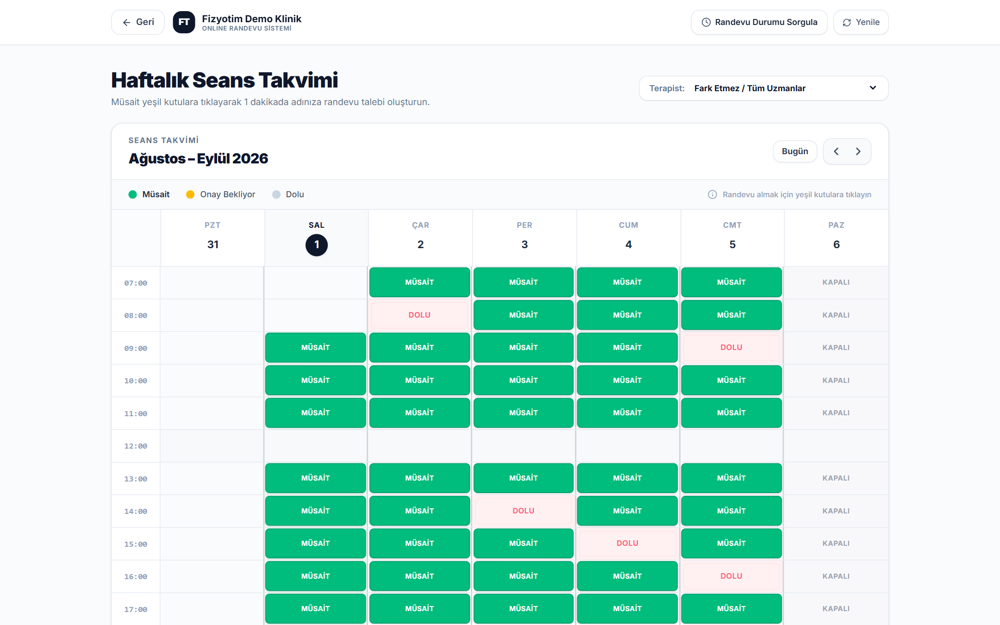

FT Fizyotim · Online Randevu & Keşif Platformu
fizyo-booking · Klinik Yönetim Sistemi ile Paralel Çalışan Danışan Arayüzü
Danışanlarınız 7/24
müsait saatleri görsün,
randevusunu anında alsın.
Telefon trafiğini ortadan kaldıran, Klinik Yönetim Paneli (rezervasyon_app) ile aynı veritabanı üzerinde gerçek zamanlı ve çift yönlü çalışan online randevu, paket sorgulama ve klinik keşif platformu.

fizyo-booking · Sistem & Pazarlama DokümanıÇift Yönlü Canlı Senkronizasyon
01 · Paralel Ekosistem Mimarisi
Klinik Yönetim Paneli ile saniyesi saniyesine senkron
fizyo-booking, bağımsız bir form sayfası değildir; rezervasyon_app (Klinik Yönetim Paneli) ile aynı bulut veritabanını paylaşan, anlık veri alışverişi yapan bütünleşik bir danışan portalıdır.
Danışan Tarafı (fizyo-booking)
Müsait saatleri görür, uzman seçer, kayıtlı telefonuyla 1 dakikada randevu talebi gönderir ve kalan paket seanslarını sorgular.
⚡ Gerçek Zamanlı
Ortak Bulut DB
↔
Klinik Tarafı (rezervasyon_app)
Takvimi, mesai/mola saatlerini, uzmanları ve paketleri yönetir. Gelen talepleri tek tıkla onaylayıp seansa dönüştürür.
İki Sistem Arasındaki Canlı Veri Akışı
| Klinik Yönetim Panelinde Yapılan İşlem | fizyo-booking (Danışan Ekranı) Üzerindeki Anlık Etkisi |
|---|
| Yeni Seans / Paket Randevusu Ekleme | İlgili gün ve saat kutusu danışan ekranında anında DOLU olarak kilitlenir; çakışma imkânsız hale gelir. |
| Mesai Saati & Öğle Molası Güncelleme | Açılış-kapanış saatleri takvime yansır; mola saatleri seçilemez kilitli satır olarak korunur. |
| Tedavi, Süre, Fiyat & Uzman Tanımlama | Danışan randevu penceresinde güncel hizmet listesini, süresini, ücretini ve sadece o hizmete atanmış uzmanları görür. |
| Seansı "Tamamlandı" İşaretleme | Danışan Randevu Durumu Sorgula ekranında tamamlanan ve kalan seans sayısını (% ilerleme çubuğuyla) güncel görür. |
| Randevu Talebini Onaylama / Reddetme | Talep durumu "Onaylandı" (takvimde Dolu) veya red nedeni ile birlikte danışan sorgulama ekranına düşer. |
1. Klinik Paneli (rezervasyon_app): Uzmanların 31 Ağu – 6 Eyl takvimi
2. Danışan Ekranı (fizyo-booking): Aynı saatler otomatik "DOLU" görünür
02 · Çift Modlu Kullanım Yapısı
İster 81 ilde klinik keşif rehberi, ister işletmenize özel randevu sayfası
fizyo-booking iki farklı çalışma modunu tek çatı altında sunar: genel ziyaretçiler için 81 İl Klinik Keşif & Tanıtım Platformu ve doğrudan işletme bağlantısıyla (?clinic=klinik-adiniz) giren danışanlar için Kliniğe Özel Canlı Randevu Sayfası.
Genel Keşif Vitrin Ekranı — 81 ilde hızlı şehir seçimi, istatistik barı ve klinik arama geçişi
3 Adımda Randevu İşleyişi — 01 Şehir & Klinik Seçin · 02 Canlı Takvimden Saat Seçin · 03 Anında Onay
03 · Uzmanlık Vitrini & Akıllı Klinik Rehberi
Tedavi alanına veya şehir/ilçeye göre anında filtreleme
Danışanlar ilgilendikleri uzmanlık kartına tıklayarak o alanda hizmet veren merkezleri filtreleyebilir veya 81 il ve ilçe seçimiyle aradıkları kliniğe saniyeler içinde ulaşabilir.
Kliniklerin Sunduğu Uzmanlıklar — tıklanabilir kategori kartları ve etiketler
Şehir & İlçe Seçerek Klinik Bul — A-Z alfabetik listeleme, aktif klinik kartları ve "Müsait Saatleri Gör & Randevu Al" butonu
04 · Canlı Haftalık Seans Takvimi
Müsait ve dolu saatler gerçek zamanlı olarak ekranda
Danışan kliniğinizi seçtiğinde veya doğrudan size özel bağlantıya (QR kod / sosyal medya linki) tıkladığında Haftalık Seans Takvimi açılır. Her 30 saniyede bir otomatik güncellenen takvimde yeşil MÜSAİT kutulara tıklanarak randevu süreci başlatılır.
Canlı Haftalık Seans Takvimi — Müsait (Yeşil), Onay Bekliyor (Turuncu), Dolu (Pembe) ve Kapalı gün görünümleri
👨⚕️ Uzman / Terapist Filtresi
Danışan sağ üstteki seçim kutusundan "Fark Etmez / Tüm Uzmanlar" diyebilir veya kendi uzmanını seçip sadece onun müsaitliğini görebilir.
🛑 Otomatik Mola & Mesai Koruması
Klinik Ayarları'nda tanımladığınız öğle arası (ör. 12:00) ve kapalı günler (ör. Pazar) danışan ekranında otomatik olarak seçime kapatılır.
🔄 Canlı Yenileme & Offline Uyarı
Takvim arka planda otomatik senkronize olur; internet bağlantısı koptuğunda danışanı uyaran çevrimdışı koruma bandı devreye girer.
05 · Akıllı Randevu Talebi & Suistimal Koruması
Kayıtlı telefonla otomatik tanıma ve 5 katmanlı kota kontrolü
Danışan müsait bir saate tıkladığında açılan Randevu Talebi Oluştur penceresi, hem danışan için en hızlı deneyimi sunar hem de takviminizi sahte/mükerrer taleplere karşı korur.
Adım Adım Akıllı Form
- Otomatik Hasta Tanıma: Danışan 11 haneli kayıtlı cep telefonunu girdiğinde sistem
patients tablosundan kaydı otomatik bulur; tekrar isim yazdırmaz.
- Tedavi & Uzman Eşleşmesi: Hizmet seçildiğinde süresi ve fiyatı görünür; sadece o hizmeti uygulayan uzmanlar listelenir.
- Hizmet Yeri Tercihi: Danışan randevusunu Klinikte, Evde veya Uzaktan olarak talep edebilir.
- Hızlı Şikayet Etiketleri: Bel/Fıtık, Boyun Ağrısı, Diz & Menisküs, Postür & Skolyoz gibi hazır etiketlerle tek tıkla ön bilgi eklenir.
Takviminizi Koruyan 5 Katmanlı Güvenlik Kuralı
1. Kayıtlı Danışan Doğrulaması
Sistemde kaydı olmayan yabancı telefon numaraları takvimi rastgele dolduramaz.
2. Bekleyen Talep Limiti (Maks. 2)
Onay bekleyen 2 talebi olan danışan, klinik değerlendirmeden yeni talep açamaz.
3. Haftalık Seans Kotası (Maks. 2)
Aynı hafta içinde en fazla 2 seans/talep sınırı ile takvim blokajı önlenir.
06 · KVKK Korumalı Randevu & Paket Sorgulama
"Kaç seansım kaldı?" sorusuna 7/24 self-servis yanıt
Danışanlar üst menüdeki Randevu Durumu Sorgula butonuna tıklayıp telefon numaralarını girerek kendi paket ilerlemelerini ve geçmiş/gelecek tüm randevularını saniyeler içinde görüntüleyebilir.
Sorgulama Ekranı Özellikleri
- KVKK Kişisel Veri Maskeleme: Danışan adı (
Sayın Ze**** De***), tedavi adı ve uzman bilgisi 6698 sayılı KVKK kapsamında otomatik yıldızlanarak maskelenir.
- 4'lü Seans Paket Özeti: Toplam Paket, Tamamlanan, Kalan (Kullanılabilir) ve Bekleyen (Planlanan) seans sayıları net kutularda gösterilir.
- Yüzdesel Tamamlanma Çubuğu: Paket ilerleme oranı (ör.
%30) görsel çubukla sunulur; paket bittiğinde yenileme bilgilendirmesi çıkar.
- Randevu & Talep Geçmişi: Onaylanan, tamamlanan, bekleyen ve reddedilen (red sebebiyle birlikte) tüm kayıtlar listelenir.
💡 İşletmeniz İçin Operasyonel Kazanç
Danışma ve sekreterya ekibinizin gün içinde en çok vakit kaybettiği "Randevum onaylandı mı?", "Bu hafta hangi gün gelecektim?", "Paketimde kaç seans kaldı?" telefonlarını tamamen self-servis hale getirir.
07 · Uçtan Uca Randevu Yaşam Döngüsü
Danışan talebinden klinik onayına 4 adımlı senkron akış
fizyo-booking üzerinde başlayan bir randevu talebinin rezervasyon_app yönetim panelinde nasıl sonuçlandığını gösteren uçtan uca çalışma diyagramı:
Adım A (Klinik Dashboard): Yeni talep anında sesli bildirimle panele düşer
Adım B (Randevu Talepleri): Yönetici/sekreter tek tıkla talebi onaylar
Kurumsal klinik altbilgi (Footer) ve güven rozetleri
Kliniğe özel kurumsal altbilgi — KVKK & 256-Bit SSL güven barı, hizmet alanları, açık adres ve çalışma saatleri
Paketler & İletişim
Klinik Yönetim Paneli + Online Randevu Platformu tek pakette
fizyo-booking online randevu ve keşif platformu için ayrı bir ücret ödemezsiniz; seçtiğiniz pakete Klinik Yönetim Paneli (rezervasyon_app) ve Online Randevu Platformu (fizyo-booking) birlikte dahildir.
Standart Paket
Aylık esnek abonelik planı
₺250 / ay (KDV Dahil)
- Klinik Yönetim Paneli + Online Randevu Sitesi
- 81 İl Klinik Rehberi & Kliniğe Özel Randevu Linki
- KVKK Korumalı Seans & Paket Sorgulama Ekranı
- Dinamik Takvim, Mola & Kota Koruması
- Kurumsal PDF Raporlar & Tahsilat Makbuzu
- Danışma Masası QR Stand Üretici
%33 TASARRUF · 4 AY ÜCRETSİZ
Yıllık Avantaj Paketi
Uzun vadeli, en avantajlı maliyet (Aylık ~₺166)
₺2.000 / yıl (KDV Dahil)
- Tüm Standart Paket Özellikleri Dahil
- Yıllık Peşin Ödemede 4 Ay Ücretsiz Kullanım
- Ücretsiz Eski Hasta & Randevu Veri Aktarımı
- 1 Yıl Boyunca Fiyat Artışından Etkilenmeme Güvencesi
- Kliniğinize Özel QR Masa Standı Tasarım Desteği
- Öncelikli Teknik Destek
14 Gün Ücretsiz Demo & Kurumsal İletişim
İşletmenize özel yönetim panelini ve paralel çalışan online randevu sayfasını hemen test etmek için bize ulaşın:
E-posta: fatalsoft.inc@gmail.com
FatalSoft Bilişim Teknolojileri · Kocaeli / Gebze